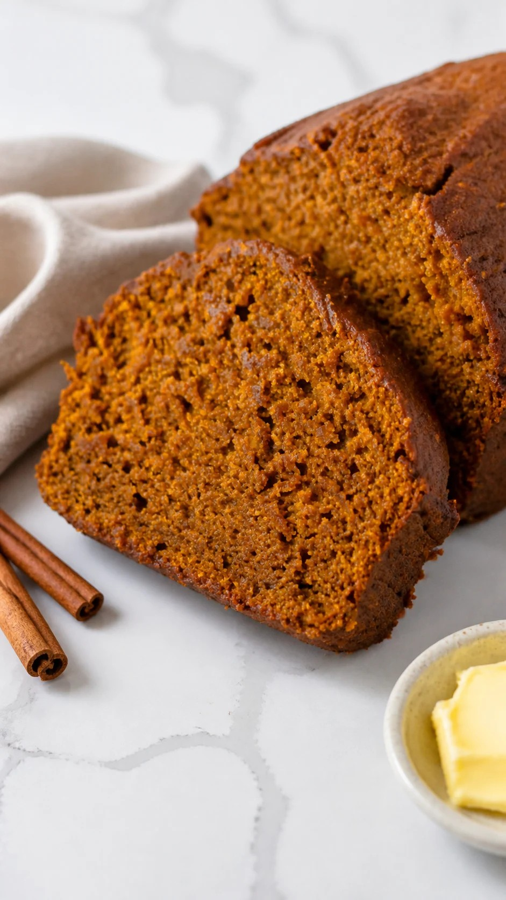

Featured Bake · Autumn Collection
Homemade Pumpkin Bread

A tender, cinnamon-spiced pumpkin loaf with a golden crust and a soft, moist center. Perfect for slow mornings, afternoon coffee, or sharing a little sweetness with someone you love.
Ingredients
- 1¾ cups all-purpose flour (210g)
- 1 teaspoon baking soda
- ½ teaspoon baking powder
- ½ teaspoon salt
- 2 teaspoons ground cinnamon
- ¼ teaspoon grated nutmeg
- 1⅓ cups pumpkin puree (300g)
- 1¼ cup granulated sugar (250g)
- ⅔ cup vegetable oil (160ml)
- 2 large eggs
- 1 teaspoon vanilla extract
Instructions
- Preheat the oven to 350°F. Grease a 9×5-inch loaf pan with baking spray.
- In a large mixing bowl, whisk together the flour, baking soda, baking powder, salt, cinnamon, and nutmeg.
- In a medium bowl, combine the pumpkin puree, sugar, oil, eggs, and vanilla and whisk until well combined.
- Pour the wet mixture into the dry mixture and stir together until just combined. Pour the batter into the prepared pan.
- Bake for 1 hour, or until a toothpick inserted in the center comes out with a few moist crumbs and the center springs back when lightly pressed. You can loosely cover the loaf with foil after 30 minutes of baking to protect the top from browning too much if desired. Let cool in the pan for 15 minutes then remove the loaf and cool completely on a wire rack.